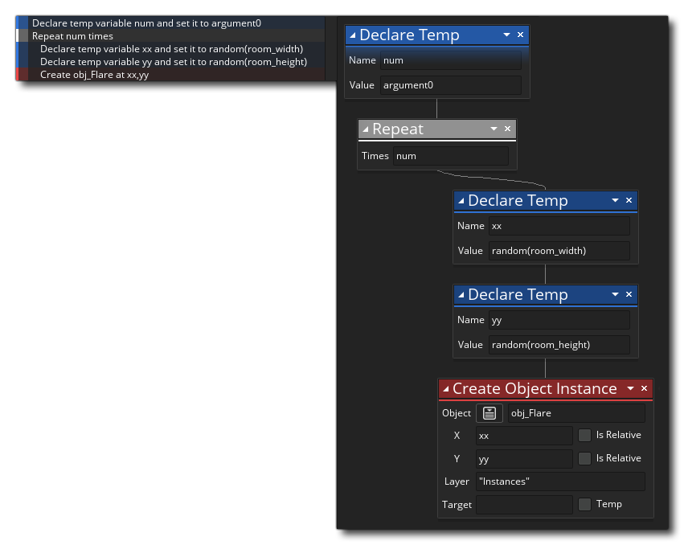
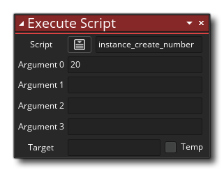

One of the resources in the Resource Tree is the Script resource. Scripts are simply blocks of code or DnD™ actions that are executed as if they were one of the built in GameMaker Studio 2 functions or actions. We have a whole section of the manual about writing scripts using code (here), but you can also make scripts using only the Drag and Drop actions.
A DnD™ script (like any built-in DnD™ action) can take different
values (or none at all), and then perform a chain of actions and
either return a value or return nothing, and you would call it
using the Execute
Script  action, which looks like this:
action, which looks like this:  The input variables are called
arguments, and you can supply up to 4 of them using this action
(although you can use all, some or none of them, depending on what
you require for the script), but you can also use the Execute
Code
The input variables are called
arguments, and you can supply up to 4 of them using this action
(although you can use all, some or none of them, depending on what
you require for the script), but you can also use the Execute
Code  to call the script, in which case your script can have either up
to 16 arguments (when using the argument0 ... argument15
variables) or as many arguments as required (when using the
argument[n] array):
to call the script, in which case your script can have either up
to 16 arguments (when using the argument0 ... argument15
variables) or as many arguments as required (when using the
argument[n] array): 
To create a DnD™ script, you simply use the right mouse button
 on the Script resource and select Create. This will create a
new DnD™ script and open the editor window:
on the Script resource and select Create. This will create a
new DnD™ script and open the editor window: 
You can name the script by right clicking  on it in
the resource tree and selecting Rename (or by using a slow
double left click
on it in
the resource tree and selecting Rename (or by using a slow
double left click  ), but note that the script name
must conform to the scripting rules for functions, so they
must start with a letter and only contain letters, numbers or the
"_" under-bar symbol.
), but note that the script name
must conform to the scripting rules for functions, so they
must start with a letter and only contain letters, numbers or the
"_" under-bar symbol.
As mentioned above, you can pass a number of arguments to a script, and it will use these to perform the task you have written it for. To understand this better, take, for example, an action and think about how it works... you place it in an event and specify a number of parameters and it will make your instance do something. Scripts are exactly the same, with the only difference being that you write them. The image below shows a simple DnD™ script that takes a single argument and uses that to create a number of instances at random positions within a room: 
Note that we assign the value argument0 to a temporary variable at the start. All values that are passed into a script are assigned the following built-in variables:
argument0, argument1, ..., etc... up to argument15
You can directly access these built in argument variables, or you can assign them to temporary (local) variables as we have done in the example above (using temporary variables makes it easier to follow what each one does, and is recommended). In the script above, the value for argument0 is what will be used to determine the number of times the repeat loop will run, and you would call the script like this: 
Not only can you pass arguments into a script, but you can also
ask a script to return a value too (using the Return
 action), so you can use them to (for example) build calculating
methods or give back an instance ID after a complex collision
detection or any number of things. Please note, however, that
using return ends the script, and so no actions placed after
it has been used will be executed, and this means that a certain
amount of thought has to go into how your scripts are
structured.
action), so you can use them to (for example) build calculating
methods or give back an instance ID after a complex collision
detection or any number of things. Please note, however, that
using return ends the script, and so no actions placed after
it has been used will be executed, and this means that a certain
amount of thought has to go into how your scripts are
structured.
Below is a Drag and Drop script that returns a value:

The script above simply checks all the instances in a room to
see what their object_index is and if one of them is the
player object the script will return true (ending the
script) or false. You would call this script like this:
 So, we call the script and
have it create a temporary (local) variable to store the returned
value (which in this case is either true or
false), and then this variable is checked and an action
taken.
So, we call the script and
have it create a temporary (local) variable to store the returned
value (which in this case is either true or
false), and then this variable is checked and an action
taken.
When making your DnD™ scripts you can use all the same actions as you would when adding actions into an object event, and you can even call scripts from within scripts, and in this way create more "modular" action code. Scripts built in this way can save you a lot of time creating the same action sequences and can also help make your action sequences easier to read and easier to debug.